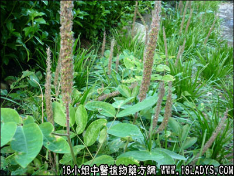

兔狗尾(中药材植物名:猫尾射)(植物科目:蝶形花科)

别名：布狗尾、狐狸尾。
植物名：猫尾射。
生长环境：本品为亚灌木、生于市郊丘陵地上。
分布：印度、缅甸、越南、马来西亚和我国西南部。
入药部分：全株。
采集期：春、夏。
自采地点：大山。
性味：性微凉、味淡。
功能：清热、润肺、止咳。
主治、用量和用法：1、内伤吐血：干用1两、加五爪龙1两、猪瘦肉适量，清水煎服；2、五势七伤，配伍用；3、癍痧发热：干用1至2两，清水煎服；4、伤寒夹色，配伍用。
验方1（治劳伤吐血方）兔狗尾1两、金针头1两、龙船花根5钱、红菱根5钱、清水四碗煎成一碗服。
（方解）本方兔狗尾清肺金；金针头滋水制火。病于肺者，二味均为要药，配以金英根之色红入止血；红菱根色白疗肺；龙船花根开郁结，合为清火宁金之剂，对劳伤吐血有效。
（方歌）内伤吐血验方新，兔狗尾续红菱根，金针头合龙船蔃，清金益气水滋生。
验方2（治癍痧发热夹色方）兔狗尾1两、狮子滚球5钱、蛇泡簕5钱、海金沙藤5钱、簕角根5钱、清水四碗、煎成一碗服。
（方解）本方兔狗尾清肺热；狮子滚球清尾肠热；簕角根清肝热；蛇泡簕清阴热。更佐以海金沙藤利水，使邪从小便而去。
（方歌）癍痧发热夹色症，兔狗尾蛇泡簕应，簕角海沙狮滚球，邪从尿解功续命。